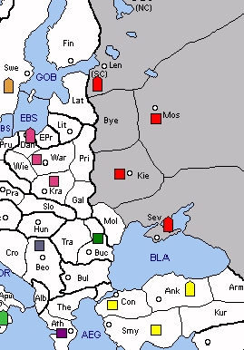

USSR (U) will probably be more pleased with its latest five-year plan that with its initial position. Nearby SCs are in short supply, and USSR must work hard to get a single build in 1929. Finland is available in the north, but Sweden can challenge occupation. If Sweden is hostile, then taking Finland can involve a bit of a guessing game (F LEN-GOB or F LEN-FIN?) Down south, Rumania is now armed and cannot be challenged on the first turn.
Rounding things out, Greece is probably the least influential minor on the map. Army Athens has basically one move: A ATH-THE. Doing so vacates Athens and risks the whims of an avaricious Italian. If Greece survives the first year, USSR may elect to build a fleet in Athens and then go after Turkey. However, this involves a major sacrifice for USSR, which often earns only one build in 1929.
|
 |
MINOR (Basic): Greece SUGGESTED MINORS (Advanced): Sweden, Rumania, Yugoslavia POTENTIAL ALLIES: BRITAIN versus Sweden (Italy) and Turkey FRANCE versus Poland and Turkey GERMANY versus Poland and Sweden (Italy) |
Suggested Openings for USSR:
Scandinavian: |
A KIE-PRI, A MOS-LEN, F LEN-FIN/GOB, F SEV-BLA |
|
Soviet designs on Scandinavia drive this opening, which may involve a guessing game with Sweden. Bounces with Poland in Pripet and Turkey in the Black Sea protect the southern and western approaches. |
|
Molotov: |
A KIE-PRI, A MOS-LEN, F LEN-LAT, F SEV-BLA |
|
With an eventual goal of conquering Poland, this opening challenges Polish control of Lithuania. However, a Polish bounce in Pripet can flambé your plans in no time at all. |
|
Bessarabian: |
A KIE-GAL, A MOS-SEV, F LEN-FIN, F SEV-MOL |
|
Rumania is the prime objective, although its capture may require more time. Balkan campaigns can bog down quickly unless Yugoslavia cooperates. |
An Anglo-Soviet alliance can provide USSR with some immediate help, albeit minor. Britain's Egyptian fleet can create a second front for Turkey, distracting units from elsewhere. If Britain builds a second unit in Egypt, then Turkey will face a more serious threat. Even if USSR doesn't attack Turkey, Egypt may provide USSR with valuable time to fight, say, Poland. However, the price of such insurgency will probably be Soviet support for British occupation of Sweden, since USSR has little else to offer. Britain could then provide support against Poland if suitable terms could be arranged.
A France-USSR alliance offers similar benefits for USSR. France's Rumanian army will prevent Turkish occupation of Bulgaria and limit the Sultan's growth considerably. Alternatively, Rumania could support an advance on Poland. France will probably be more cooperative if it can earn a build, perhaps even willing to use the build in Paris instead of Bucharest. The problem for USSR is that Rumania both poses a threat to Soviet home SCs and lies directly in USSR's southern expansion path. At some point, Rumania will likely need to be extinguished.
Finally, USSR can repeat history by allying with Germany. Poland will probably be the first target, but Germany must sacrifice an early build and risk a British invasion of Belgium in order to mount an effective attack. As an incentive, USSR might offer the lion’s share of centres to Germany. Meanwhile, Germany’s Yugoslavian army could help USSR’s Greek army capture Bulgaria – although this is by no mean a certainty. Regardless, USSR could build a fleet in Athens and then go whole hog against Turkey once Poland is finished. However, problems will arise if Germany later decides to repeat history and attack USSR.
Opposing combinations of Britain, Germany, Poland, and Turkey can greatly complicate life for USSR. The greatest challenge might be to encourage Poland to move south or west instead of east. Obviously, USSR can't expand in all directions at once so one solution might be to engineer a northern conflict in order to buy time. One scenario would be to encourage Poland to open with F DAN-EBS, with the eventual goal of attacking Sweden with Soviet support from Finland. As Poland solidifies its position (ideally with a second fleet), a Scandinavian war might erupt between Poland and Britain or Germany. Meanwhile, USSR can expand in the south.